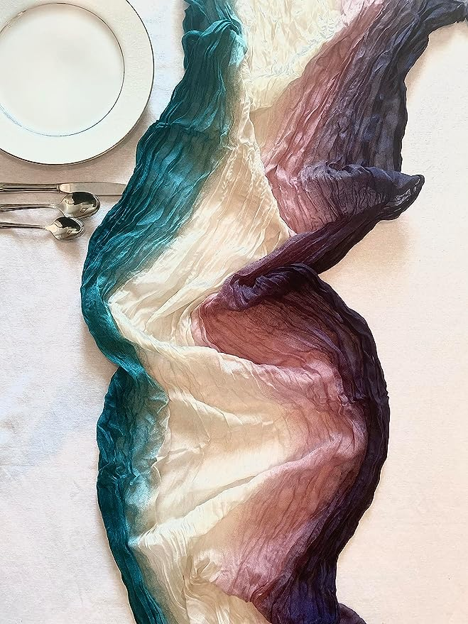
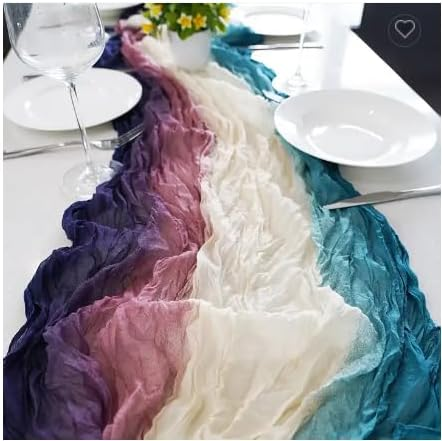
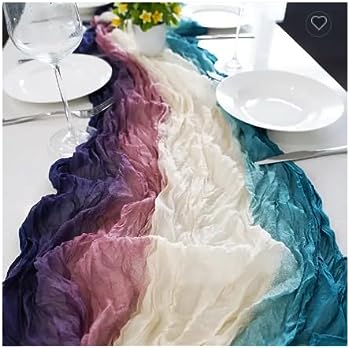

Bec's Designs
6ft Multicolor Boho Cheesecloth Table Runner, Unique Fade in Blue, Teal, Cream, Pink & Purple, Perfect for Weddings, Parties & Special Events, Durable & Machine Washable by Bec's Designs
In the enchanting town of Lushville, the most talked-about event of the year was fast approaching: the annual Lushville Gala. This wasn't just any gala; it was an artful combination of color, texture, and magic. The townsfolk had been buzzing with excitement, especially about this year's surprise element: a unique table runner rumored to be the most beautiful ever seen.
Eva, the event planner, was the brain behind this intrigue. She had come across Bec's Designs, a boutique design company renowned for its handcrafted and unique decorative pieces. This year, she decided to incorporate their latest creation, a 6ft multicolor boho cheesecloth table runner. This wasn't just any table runner; it showcased a mesmerizing fade in blue, teal, cream, pink, and purple hues that captured the essence of a sunset melting into the horizon. Stitching on the ends ensured its durability, promising it wouldn’t come unraveled during the event's hustle and bustle.
On the day of the gala, as guests arrived, they were captivated by the centerpiece: a long wooden table adorned with the table runner. It flowed gently off the table, inviting guests to touch and feel its soft, elegant wrinkles. The lighting in the room caught the colors just right, making it shimmer like a cascading waterfall. It was a sight to behold, transforming the entire ambiance into a dreamy, fairytale-like setting.
Ms. Thompson, an elderly woman known for her love for art and colors, walked over to Eva, her eyes gleaming with joy. "This table runner, dear," she began, "it's like a masterpiece, an artful boho representation of our lives – so colorful, full of twists and turns, yet so beautiful."
Throughout the evening, the table runner became a conversation piece. People expressed their creativity, sharing tales of weddings, parties, and special events that had a personal touch. One couple even contemplated using it for their upcoming baby shower, envisioning it as a canvas that would capture their journey into parenthood.
As the night wrapped up, Eva couldn't help but feel proud. The table runner had not only added beauty to the gala but had also united the townsfolk, evoking memories, and creating new ones. She quietly thanked Bec's Designs for crafting such a masterpiece, realizing that sometimes, it's the little details that leave the most significant impact.
And so, in the heart of Lushville, an ordinary cheesecloth table runner transformed an event into an unforgettable evening of stories, laughter, and connections.
by Rich Williams




As an Amazon Associate I earn from qualifying purchases.